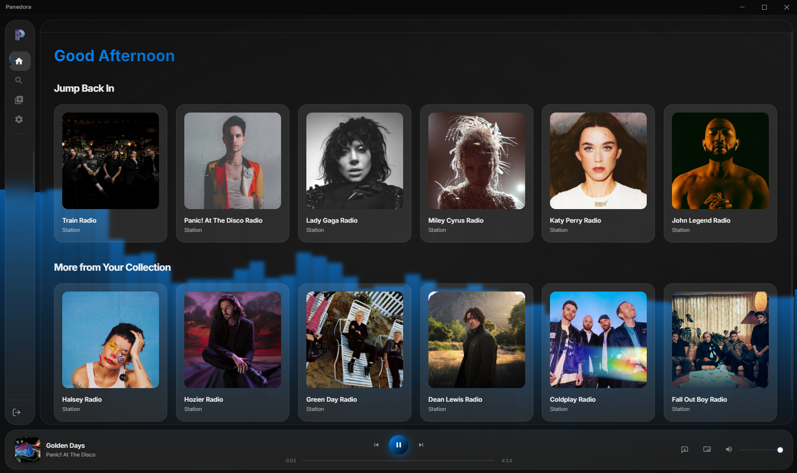

Experience Pandora
Like Never Before
A stunning, completely reimagined desktop client for Pandora with seamless playback controls, intelligent feedback, and a modern glassmorphic interface.
A stunning, completely reimagined desktop client for Pandora with seamless playback controls, intelligent feedback, and a modern glassmorphic interface.

Requests the premium aacplus (HE-AAC) streaming format from Pandora's servers, ensuring a clear and consistent listening experience.
Large, interactive Thumbs Up and Down buttons that sync directly with Pandora. Review your recently played history and instantly undo any negative feedback right from the app.
Built as a native-feeling Electron application featuring a completely custom frameless window for a sleek, modern, and unobstructed viewing experience.
Collapse the app into a compact floating bar that stays gracefully on top of all other windows, including borderless fullscreen games.
Powered by the HTML5 Web Audio API, Panedora extracts frequency data from the active media stream to render live, interactive canvas animations like reactive floating orbs and digital snow.
Enjoy seamlessly fetched, perfectly formatted lyrics that map precisely to the currently playing track.
Choose from an array of curated Glassmorphism color palettes including Midnight Violet, Deep Ocean, Emerald Forest, and Neon Cyber. Every UI element reacts instantly.
Enable Adaptive Mode to have the application intelligently extract dominant and accent colors from the active album artwork in real time for a unified listening experience.
Select from 10 distinct floating background animations—from subtle orbs and particles to intense reactive audio visualizers—all inheriting your current color theme.
Panedora is a personal, educational, and experimental project created purely for fun. It was built as a creative exercise to explore modern UI design (Glassmorphism) and Electron-based desktop application development. This project is intended for personal use only and was developed with zero intent to cause harm, bypass security, or interfere with Pandora's business operations. It is shared as a demonstration of UI/UX design and technical integration.
A premium, immersive Pandora desktop client built with Electron. Panedora features a fully theme-driven Glassmorphism design system, persistent session management, and an enhanced playback experience that goes far beyond the standard Pandora web player.
A Note to Developers: This project is source-available and intended for educational purposes. You are free to explore and learn from the code. However, under the CC BY-NC-ND 4.0 license, you may not distribute modified versions of this software. Additionally, to prevent abuse of the legacy Pandora API, please do not modify or tamper with any of the application's backend logic.
Panedora is a modern Electron application utilizing a secure, multi-process architecture. The Main Process handles all secure Pandora API communication via Chromium's native network stack, while the Renderer Process handles the UI layer using vanilla HTML5/JS and modern CSS. Context isolation is strictly enforced via a preload script, meaning the frontend renderer communicates with the node backend entirely through a secure IPC bridge.
Direct authentication with Pandora's official REST API endpoints securely handles auth tokens and CSRF token lifecycles. All token state is stored locally and securely, completely preventing third-party tracking or data collection.
Your credentials are used solely to authenticate with Pandora. Your password is encrypted at rest using your operating system's secure keychain (Electron safeStorage).
Authentication tokens and encrypted credentials are stored locally on your machine in your user data directory. All auth data is fully cleared on sign-out.
No personal data is collected or shared with any third-party services. The application communicates exclusively with Pandora's infrastructure.